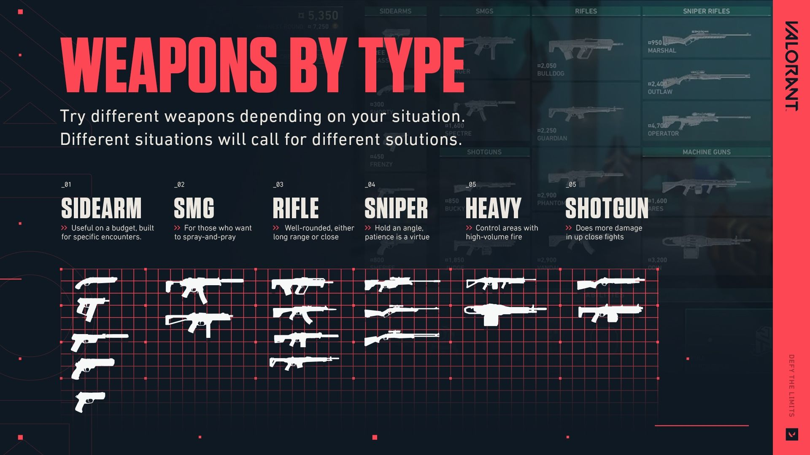

Welcome to the Beginner’s Guide! Whether you’re new to the club or need a refresher, we’re here to cover everything you need to know to have a good grasp on the game. This page also includes various video guides made for you by some of the most beloved and respected players in our community. They’re pretty cracked so you should check them out.

Before you enter your first round, you’ll start by navigating through the Agent Select screen. This is an essential part of your preparation, where you’ll have the exciting opportunity to choose from a diverse group of 24 unique Agents, each offering their own special abilities and playstyles. These Agents are thoughtfully divided into four distinct roles—Duelists, Initiators, Controllers, and Sentinels—each fulfilling specific functions that contribute to your team’s overall strategy and effectiveness in the game.As you delve into the selection process, you might notice that not all Agents are available to you right away if you’re using a new account. This limitation adds an element of progression to the game, encouraging you to engage more deeply with its mechanics. The more matches you play and the more experience you gain, the quicker you’ll be able to unlock these Agents. This gradual unlocking process allows you to familiarize yourself with each character’s abilities and how they fit into different team compositions, enhancing your gameplay experience and ensuring that you develop a well-rounded understanding of the game’s dynamics. So, gear up and strategize as you select your Agent—your journey is just beginning!

Each Agent in the game boasts a distinct set of skills and abilities that are meticulously crafted to complement one another, working synergistically towards achieving victory. While it’s not strictly mandatory for your team of five to encompass every role, you’ll quickly find that having a well-rounded and diverse roster significantly enhances your chances of success. When each player takes on a specific duty aligned with their Agent’s strengths, the team becomes more formidable and versatile on the battlefield.For instance, consider the pivotal role of a Controller. This type of Agent specializes in manipulating the battlefield, making it much easier for your team to execute strategies and gain control of critical areas. If you have a Controller on your squad, they can deploy smokes and other abilities to obscure sight lines that enemies might be monitoring, creating opportunities for your team to push onto a site effectively.Moreover, this dynamic interplay among different roles—Duelists who excel at aggressive engagements, Initiators who can disrupt enemy setups, and Sentinels who provide support and healing—further solidifies the importance of teamwork. By coordinating and communicating effectively, you and your teammates can leverage your Agents’ unique capabilities, leading to well-orchestrated plays that capitalize on the strengths of each role. Embracing this diversity not only elevates your gameplay but also fosters a more engaging and enjoyable experience for everyone involved.
After all players have made their selections and chosen their Agents, the excitement builds as you’ll be thrust into a random map, officially entering the first round of play. The anticipation is palpable as you prepare to engage in a strategic showdown.Each round begins with players assuming the roles of either attackers or defenders, setting the stage for the unique challenges that lie ahead. After a total of 12 rounds, teams will switch sides, allowing both attackers and defenders to experience different aspects of the game and adapt their strategies accordingly.Before each round kicks off, you’ll have a crucial preparation period. This time allows you to strategize and spend your hard-earned credits on various items and skills to enhance your chances of success in the upcoming round. Your choices here are critical, as they should reflect your Agent's abilities and your preferred playstyle.Consider your options carefully: do you want to invest in a skill that provides healing for your team, bolstering your squad’s sustainability during intense engagements? Or would you prefer to acquire a more powerful weapon to dominate your enemies and secure key eliminations? The decisions you make in this preparation phase can significantly influence the flow of the game, so think strategically about what will best support your team’s objectives and complement your overall strategy. The right purchases can turn the tide of battle, making this preparation period a vital component of your gameplay experience.
Consider your options carefully: do you want to invest in a skill that provides healing for your team, bolstering your squad’s sustainability during intense engagements? Or would you prefer to acquire a more powerful weapon to dominate your enemies and secure key eliminations? The decisions you make in this preparation phase can significantly influence the flow of the game, so think strategically about what will best support your team’s objectives and complement your overall strategy. The right purchases can turn the tide of battle, making this preparation period a vital component of your gameplay experience.
In VALORANT, you’ll find that there’s a gun perfectly suited for every conceivable situation on the battlefield. The game features a diverse arsenal, with each weapon designed to fulfill specific roles and tactical needs. For a comprehensive understanding of your options, be sure to explore our dedicated arsenal page, where you can delve into the details of each weapon, including their stats, costs, and unique characteristics.When you’re uncertain about which weapon to purchase, a good strategy is to base your decision on the type of weapon and how it aligns with your playstyle, skill level, and your team’s overall strategy. For example, if you prefer aggressive gameplay, you might gravitate towards submachine guns or rifles that offer a good balance of fire rate and damage. Conversely, if you favor a more defensive approach, shotguns or snipers might be more to your liking.Keep in mind that you won’t always have the credits necessary to buy your preferred weapon. This limitation encourages experimentation; don’t hesitate to try out different guns to discover which ones resonate with you the most. By testing various weapons in different scenarios, you’ll gain valuable insights into their strengths and weaknesses, preparing you to adapt to any situation that arises during gameplay. With practice and exploration, you’ll refine your choices, ensuring that you’re always equipped for success, no matter the circumstances.
In VALORANT, players can explore a total of 11 unique maps, each serving as a dynamic stage for you to outmaneuver and outsmart your enemies. You can check them out here, where you’ll find detailed descriptions and layouts of each map. Each one offers different environments and challenges, encouraging you to flex your creative skills and showcase your gunplay as you implement various strategies tailored to the map you’re playing on.To maximize your effectiveness in each match, it’s crucial to learn and memorize the intricacies of these maps. Understanding key locations, choke points, and sightlines can give you a significant advantage over your opponents. Take note of where your enemies might approach from and keep an eye on those angles. And remember, checking your corners is essential—unexpected encounters can often turn the tide of a round.You may also find that your choice of Agent can greatly influence your performance on specific maps. Certain maps feature high platforms or verticality that can make Agents with abilities to jump, teleport, or traverse these areas much more appealing. For example, an Agent with mobility skills can take advantage of these elevated spots to surprise enemies or secure advantageous positions. By aligning your preferred playstyle with the right Agents and maps, you can create powerful synergies that elevate your gameplay and enhance your overall experience in VALORANT.
That wraps up our VALORANT Beginner’s Guide! We hope you found it helpful as you embark on your journey through this exciting game. If you’re hungry for more information and insights, be sure to visit our news page, where we’ll keep you updated on the latest Agents, maps, and other game developments.Don’t forget to connect with us on our social media platforms for all the latest updates, tips, and community news. We’re excited to have you join our growing community of players, and we can’t wait to see how you progress and adapt on the battlefield. Good luck, and we look forward to seeing you in-game! Happy gaming!
League of Legends is an engaging team-based strategy game that pits two teams of five formidable champions against each other in a quest to destroy the opposing team’s Nexus. With a roster of over 140 champions at your disposal, each with their own unique abilities and playstyles, you have the freedom to create dynamic team compositions that can adapt to any situation.As you dive into the action, you'll engage in epic plays, secure crucial kills, and strategically take down enemy towers. Each match is a test of skill, teamwork, and strategy, where coordination with your teammates can lead to incredible victories. Whether you prefer to be the nimble assassin darting in and out of combat, the tank soaking up damage for your team, or the support providing vital healing and crowd control, there's a champion for every playstyle.With constant updates and new champions regularly introduced, League of Legends offers an ever-evolving battlefield where players can hone their skills and develop strategies to outsmart their opponents. So gear up, choose your champion wisely, and get ready to battle your way to victory!
The Nexus serves as the heart of both teams’ bases in League of Legends, acting as the ultimate objective that players must strive to destroy to claim victory. Located at the center of each base, the Nexus is protected by two sets of defensive towers that players must dismantle before they can reach it.To win the game, your primary goal is to destroy the enemy's Nexus before they do the same to yours. This requires strategic planning, teamwork, and effective execution throughout the match. As you and your teammates battle your way through the lanes, you’ll need to coordinate your attacks, secure objectives like turrets and inhibitors, and maintain control of key areas on the map.The destruction of the Nexus signifies the end of the game, marking your team’s triumph in the intense strategic showdown. So, stay focused, communicate effectively with your teammates, and work together to break through your opponent’s defenses and secure that all-important victory!
To reach the enemy Nexus in League of Legends, your team must clear at least one lane, navigating through a series of defensive structures that stand in your way. These structures, known as turrets and inhibitors, play a crucial role in defending the enemy base.Each lane is equipped with three turrets that provide cover and protection for the enemy champions. These turrets deal significant damage to any enemy that comes within range, making them formidable obstacles that require careful planning and coordination to take down. Beyond the turrets, each lane also features one inhibitor, which, when destroyed, allows your team to spawn super minions in that lane. These super minions can help push the lane further, putting additional pressure on the enemy team.As you make your way toward the enemy Nexus, keep in mind that the Nexus itself is guarded by two additional turrets. These final defenses must be overcome before you can deliver the decisive blow to the Nexus. Successfully navigating and dismantling these defensive structures is essential for creating pathways to the enemy base, ultimately setting the stage for your team to secure victory. Stay vigilant, communicate with your teammates, and strategize effectively to clear these lanes and push toward the enemy Nexus!
Turrets play a vital role in League of Legends, dealing damage to both enemy minions and champions while providing limited vision in areas obscured by the Fog of War for your team. Their presence not only helps protect your team’s base but also grants strategic advantages by revealing enemy movements nearby.To effectively approach and take down these structures, it’s advisable to use your minions as a shield. Sending your minions ahead to absorb the turret’s damage allows you to minimize your own risk while dealing damage to the turret itself. As your minions engage the turret, you can safely attack from behind, allowing you to charge ahead and apply pressure on the structure without taking unnecessary damage.Coordinating with your team during this process is crucial. You’ll want to ensure that your champions are positioned to support one another, whether it’s by providing crowd control, healing, or additional damage. By leveraging the protection of your minions and working together as a team, you can dismantle turrets more efficiently and pave the way toward the enemy’s Nexus. Stay focused, communicate, and make the most of your minion wave to push forward effectively!
Each Inhibitor in League of Legends is protected by a turret, serving as an important defensive structure that your team must overcome to gain a significant advantage. When you successfully destroy an Inhibitor, it triggers the spawning of super minions in that lane for several minutes. These super minions are much stronger than regular minions and can help create overwhelming pressure on the enemy team, allowing your team to push further into their territory.After you destroy the Inhibitor, it won’t remain permanently out of commission. Instead, it will respawn after a certain amount of time, at which point super minions will stop spawning in that lane. This means that timing is crucial; after taking down an Inhibitor, you’ll want to capitalize on the opportunity to push your advantage quickly. Use the super minions to apply pressure on enemy structures, force the enemy champions to respond, and potentially create openings for your team to secure objectives or take down turrets.However, keep in mind that while the Inhibitor is down, the enemy team will likely focus on defending and reclaiming control of the lane. Communication and coordination with your teammates will be essential to make the most of the super minions and maintain your momentum until the Inhibitor respawns. Stay aggressive, but also be cautious of enemy ambushes as you push toward victory!
In League of Legends, the area between the lanes is known as the jungle, a rich environment filled with neutral monsters and jungle plants that offer valuable resources for your team. Among the various creatures that inhabit the jungle, two of the most significant are Baron Nashor and the Drakes.Baron Nashor is a powerful neutral monster located in the Baron pit, and defeating it grants your team a significant advantage. Upon killing Baron Nashor, your team receives the Baron buff, which enhances the strength of your minions, making them tougher and granting them increased damage. This buff can be pivotal in pushing lanes and applying pressure on the enemy team, often leading to critical team fights and objective control.Drakes, on the other hand, are elemental creatures found in different areas of the jungle, each providing unique buffs that can greatly enhance your team’s capabilities. There are several types of Drakes, including Infernal, Ocean, Mountain, and Cloud, each offering distinct advantages such as increased damage, healing, or movement speed. Securing these Drakes not only grants buffs but also contributes to your team's overall power level throughout the game.
In League of Legends, each champion is equipped with a unique set of abilities and items that play a crucial role in their effectiveness during matches. Champions typically have five core abilities, which include one passive ability and four active abilities that define their playstyle and role within the team.In League of Legends, each champion is equipped with a unique set of abilities and items that play a crucial role in their effectiveness during matches. Champions typically have five core abilities, which include one passive ability and four active abilities that define their playstyle and role within the team.In addition to their abilities, champions can also utilize two Summoner Spells, which are powerful spells chosen at the start of the match. These spells can provide critical utility, mobility, or healing, and selecting the right ones for your champion can greatly enhance your impact on the game.Furthermore, champions can build up to seven items at any given time. Items offer various stats and effects that can significantly boost your champion’s performance. The optimal combination of items often depends on your champion's role, the state of the game, and the enemy team composition.Figuring out the ideal ability order, summoner spells, and item build is essential for maximizing your champion’s potential and contributing effectively to your team’s success. Understanding the synergy between your abilities and items will allow you to adapt to different scenarios, whether you’re dealing damage, providing support, or tanking damage for your teammates.Regularly reviewing guides, experimenting with builds, and practicing different champions will help you refine your approach and improve your gameplay. By mastering these elements, you’ll be better equipped to face your opponents and lead your team to victory!
TEKKEN 8 picks up where the gripping saga of the Mishima bloodline leaves off, diving deeper into the intense and tragic narratives that have defined the series. Following the climactic defeat of Heihachi Mishima, Kazuya Mishima has solidified his grip on power and is now using the vast resources of G Corporation to launch a campaign for global domination. His ruthless ambition drives him to wage war against the world, threatening to plunge it into chaos under his tyrannical rule.In the midst of this turmoil, Jin Kazama finds himself confronting his destiny with newfound resolve. Reunited with his long-lost mother, he grapples with the complexities of his family legacy and the burden of his lineage. As the stakes rise, Jin is determined to put an end to Kazuya's reign of terror and the destructive cycle that has plagued their family for generations.
In Tekken 8, 32 fighters will clash in an exhilarating showdown, all rendered with next-gen visuals that elevate the gaming experience to new heights. Both new and returning characters are portrayed with stunning detail, thanks to high-resolution character models that have been meticulously built from the ground up. This attention to detail captures every drop of sweat and rippling muscle, immersing players in a visually breathtaking world.The roster features iconic fighters such as Paul Phoenix, King, Marshall Law, and Nina Williams, bringing back the beloved characters fans have come to know and love. Notably, the game marks the return of Raven, who hasn't been part of the story since Tekken 6—a remarkable 15 years ago! This nostalgic comeback adds depth to the narrative as players reconnect with familiar faces.One of the most exciting aspects of Tekken 8 is the return of Jun Kazama, who makes her first appearance in 25 years since her mysterious disappearance in Tekken 2. Her long-awaited comeback promises to unravel new layers of the story, further intertwining the fates of the Mishima bloodline.Additionally, Tekken 8 introduces a fresh character, Azucena, hailing from Peru. This new fighter brings unique moves and fighting styles to the mix, enriching the game’s diverse roster and offering players new strategies to explore.With its combination of stunning visuals, a rich roster, and immersive gameplay, Tekken 8 is set to deliver an unforgettable fighting experience that both veterans and newcomers will appreciate. Get ready to step into the arena and unleash your fighting spirit!
TEKKEN 8 delves deeper into the tragic saga of the Mishima and Kazama bloodlines, exploring the intense and tumultuous dynamics that have defined their legacy. In this latest chapter, Jin Kazama is determined to defy his fate as he confronts his father, Kazuya Mishima, whose relentless pursuit of power has ignited war and destruction across the globe. This father-and-son grudge match promises to escalate the stakes and unravel the complex emotions tied to their familial conflict.The game offers an immersive storytelling experience, blending Hollywood-grade cutscenes with breathtaking, over-the-top battles that capture the essence of the TEKKEN franchise. Players will be drawn into a gripping narrative filled with drama, betrayal, and the enduring struggle between good and evil, all while showcasing the stunning visuals and intricate character designs that fans have come to expect.As players embark on this epic journey, they can expect a blend of thrilling action and emotional storytelling, making TEKKEN 8 a standout entry in the beloved fighting game series. Get ready to witness the next chapter in this legendary saga, where personal vendettas and global conflict collide in spectacular fashion!
In TEKKEN 8, the new single-player mode, Arcade Quest, offers players the exciting opportunity to create their own avatar and embark on a journey to conquer rivals across various arcades. This mode serves as a fantastic introduction to the gameplay mechanics of TEKKEN 8, providing a platform for players to familiarize themselves with the controls, techniques, and unique features of the game.As players progress through Arcade Quest, they will engage in a series of battles that go beyond traditional matches, featuring a distinctive storyline and diverse challenges. This fresh narrative allows players to immerse themselves in the TEKKEN universe while honing their skills and learning practical techniques. As the protagonist develops, players will face increasingly formidable opponents, mirroring their growth and progress throughout the game.Moreover, Arcade Quest introduces a variety of customization options for both playable characters and avatars. As players navigate through the story and achieve victories, they can unlock a range of items that allow them to personalize their gaming experience. This feature enhances the enjoyment of the mode, enabling players to express their creativity and individuality as they build their fighter.

TEKKEN has such a rich roster of characters, and practicing combo challenges is a fantastic way to get familiar with their moves and mechanics. It sounds like you've really honed your skills over time! The satisfaction of completing those challenges and seeing how quickly you can do them is a rewarding experience in itself.Many players enjoy the practice mode for the same reasons, as it allows for experimentation and mastery without the pressure of a competitive match. Plus, trying out different characters can help you appreciate the game's depth even more. It’s great that you’re finding joy in that aspect of the game! Do you have any favorite characters that you enjoy practicing with?
Silent Hill 2 is a 2024 survival horror game developed by Bloober Team and published by Konami. It is a remake of the 2001 video game, Silent Hill 2, originally developed by Team Silent, a group within Konami Computer Entertainment Tokyo (KCET). It is the first major installment in the Silent Hill series since Silent Hill: Downpour (2012). Like the original game, it follows James Sunderland, a widower, who returns to the eponymous town of Silent Hill upon receiving a letter from his deceased wife, Mary, who claims to be waiting there for him.
In Silent Hill 2, James Sunderland embarks on a haunting and emotional journey after receiving a letter from his deceased wife, Mary, calling him back to the eerie town of Silent Hill, a place where they shared many cherished memories. Driven by the hope of seeing her once more, James returns to Silent Hill, where the fog-covered streets and ominous atmosphere create an unsettling tension.By the lake, a pivotal moment occurs when James encounters a mysterious woman named Maria, who bears an uncanny resemblance to his late wife. From her face to her voice, everything about Maria reminds him of Mary. Yet, there’s something disturbingly off about her—something James can’t quite place. As she smiles and introduces herself, James is left grappling with confusion, grief, and a growing sense of dread, setting the stage for a psychological journey filled with twists, horrors, and revelations.This encounter with Maria not only deepens the mystery of Silent Hill but also forces James to confront the inner demons of his past, blurring the lines between reality and the twisted horrors that await him in the fog-shrouded town.

With the power of ray tracing and cutting-edge technical enhancements, the world of SILENT HILL is more hauntingly real than ever before. The eerie fog, dimly lit streets, and twisted environments now possess an unprecedented level of detail and realism, pulling players deeper into the unsettling atmosphere of the town. Every shadow, reflection, and flicker of light reacts naturally, amplifying the tension and sense of unease as you explore Silent Hill's decayed, nightmarish landscape.In addition to the visual improvements, new immersive soundscapes have been designed to draw you even further into the experience. The enhanced audio makes every creak, distant whisper, and footstep echo in your ears, as though you’re right there in the thick of it. The subtle yet unnerving ambient noises heighten the sense of dread, making each moment in Silent Hill feel more intense and terrifying. With these technical upgrades, SILENT HILL promises an experience that’s more immersive and terrifying than ever before, making you feel like you're truly lost in its nightmarish world.
In the SILENT HILL remake, players will have the chance to explore locations and buildings that were previously inaccessible, along with newly added areas that further enrich the eerie town. These additions breathe new life into the game, offering even long-time fans fresh experiences and discoveries as they navigate the fog-shrouded streets.While the remake stays true to the same acclaimed story that captivated players in the original, the expanded map allows for deeper exploration, inviting you to see Silent Hill with fresh eyes. With cutting-edge visuals and enhanced environmental details, every corner of the town holds new secrets, terrors, and atmospheric moments, blending nostalgia with innovation to create an experience that feels both familiar and newly unsettling. Whether you're revisiting or stepping into Silent Hill for the first time, the remake promises a hauntingly immersive journey through this iconic nightmare.